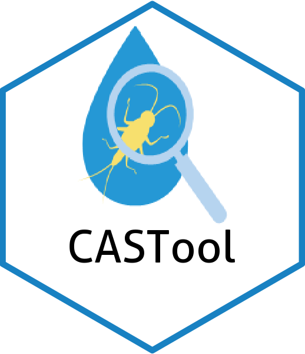
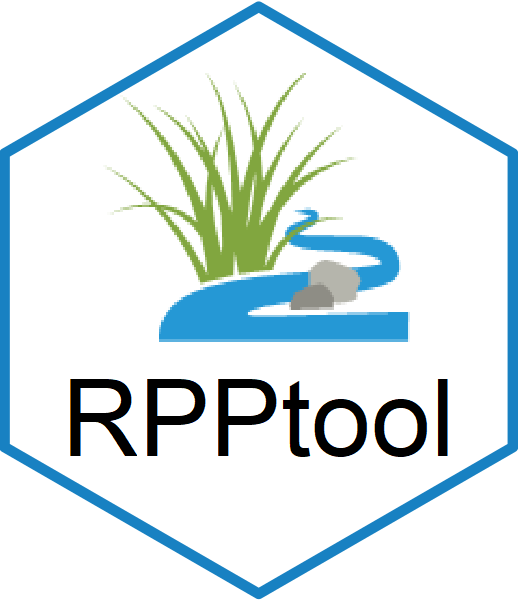

Installation
Requires the use of remotes (or another package) to install from GitHub.
Vignettes are also not installed by default. The additional parameters in install_github are used to ensure the install happens if there is an existing install and to install the vignettes.
if(!require(remotes)){install.packages("remotes")} #install if needed
install_github("leppott/CASTfxn", force=TRUE, build_vignettes = TRUE)If using R v3.6 then need an extra line to allow devtools to work properly. https://github.com/r-lib/devtools/issues/1939
Sys.setenv("TAR" = "internal")If having issues with install (e.g., ‘cannot open URL’) it could be a latency issue with GitHub. Use the code below before retrying the above install commands.
options(timeout=400)If installing from a private repo will need a PAT and a modifed install command.
# save the PAT to your system environment
Sys.setenv(GITHUB_PAT = "your_personal_access_token_here")
# install from GitHub with the PAT
remotes::install_github("username/repo", auth_token = Sys.getenv("GITHUB_PAT"))Purpose
Functions to aid the data analysis and drive the functionality of the Causal Assessment Screening Tool.
Usage
By those using the CAST and familiar with causal assessment.
The code is intended to be run from the Shiny application but can also be run in the R console.
Shiny Apps
As of 2025-09-04 the Shiny applications were moved to their own repository; https://github.com/leppott/CAST_Shiny
Help
Functions in the package have a help file with extra documentation. There is also a vignette with descriptions and examples of all functions in the CASTfxn library.
# To get help on a function
# library(CASTfxn) # the library must be loaded before accessing help
?CASTfxnTo see all available functions in the package use the command below.
# To get index of help on all functions
# library(CASTfxn) # the library must be loaded before accessing help
help(package="CASTfxn")